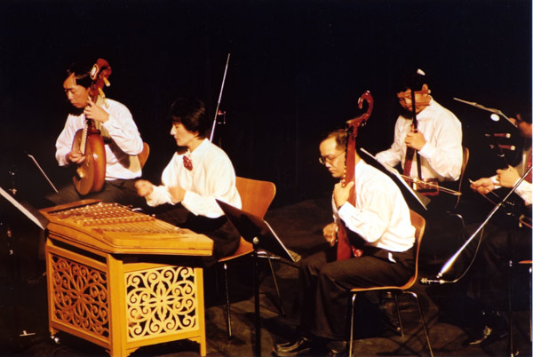

|
Performance at the ECPA Anniversary concert,
Meyer Horwoitz Theatre, Edmonton, Alberta Oct. 12, 2002
Volunteers from the University Of Alberta Circle K International Volunteer Club selling tickets at the door |
|
Performance at the ECPA Anniversary concert, Meyer Horwoitz Theatre, Edmonton, Alberta Oct. 12, 2002 Volunteers from the University Of Alberta Circle K International Volunteer Club distributint music programs
|
|
| Performance at the ECPA Anniversary
concert, Meyer Horwoitz Theatre, Edmonton, Alberta Oct. 12, 2002 Volunteers selling music CDs for performers
|
|
 |
Performance at the ECPA Anniversary
concert, Meyer Horwoitz Theatre, Edmonton, Alberta Oct. 12, 2002 Allen (Xiao) Ruby (GuZheng) playing Japanese tune "Sakura"
|
|  | Performance at the ECPA Anniversary
concert, Meyer Horwoitz Theatre, Edmonton, Alberta Oct. 12, 2002
Small group accompaniment
|
 |
Performance at the ECPA Anniversary concert, Meyer Horwoitz Theatre, Edmonton, Alberta Oct. 12, 2002 Denny, Liu De-Hai, Song Bao-Cai and Roger
|
| All pictures on this page © 2003 ECPA, All Rights Reserved |
|
| Click here for more pictures of the performance | Photo by mangcheng@telusplanet.net |
Contact : ecpa2001@hotmail.com